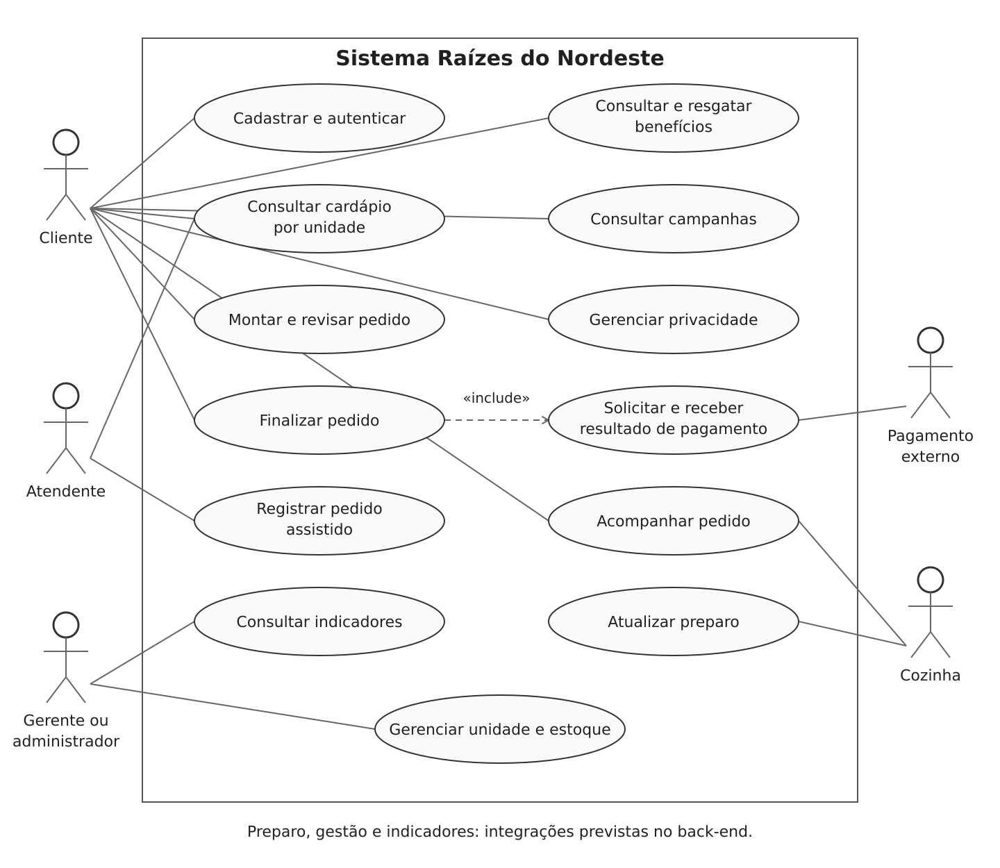
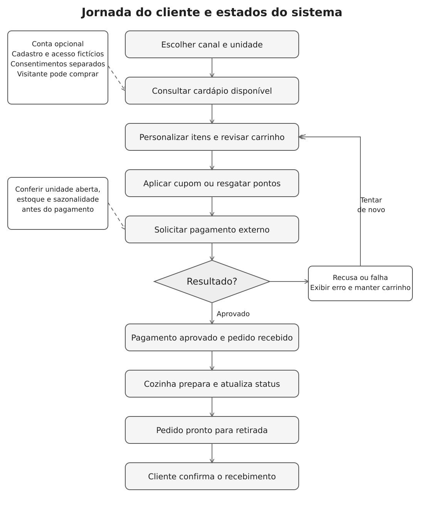
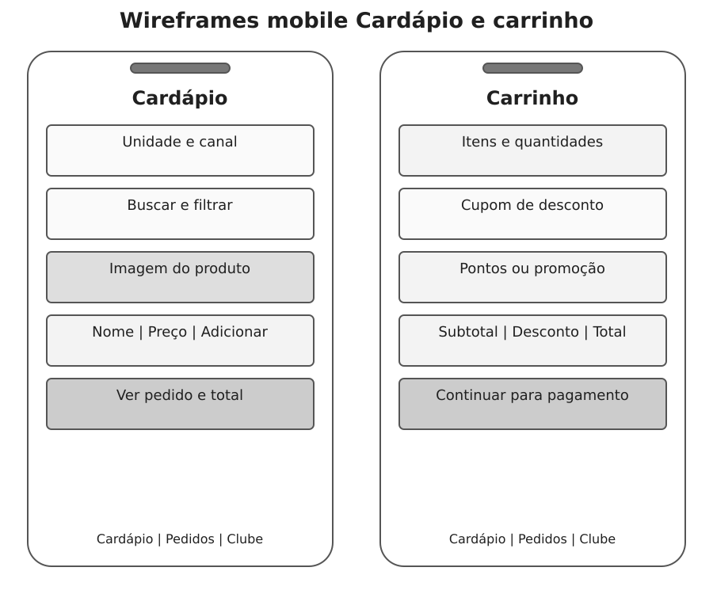
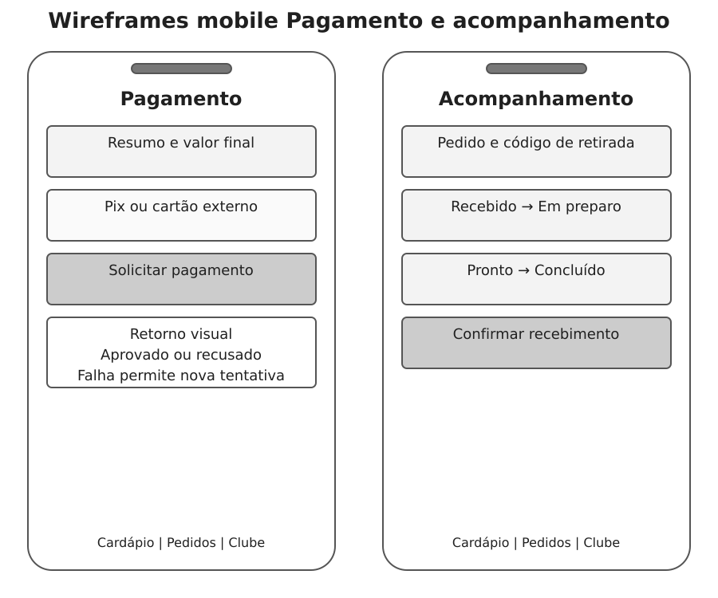
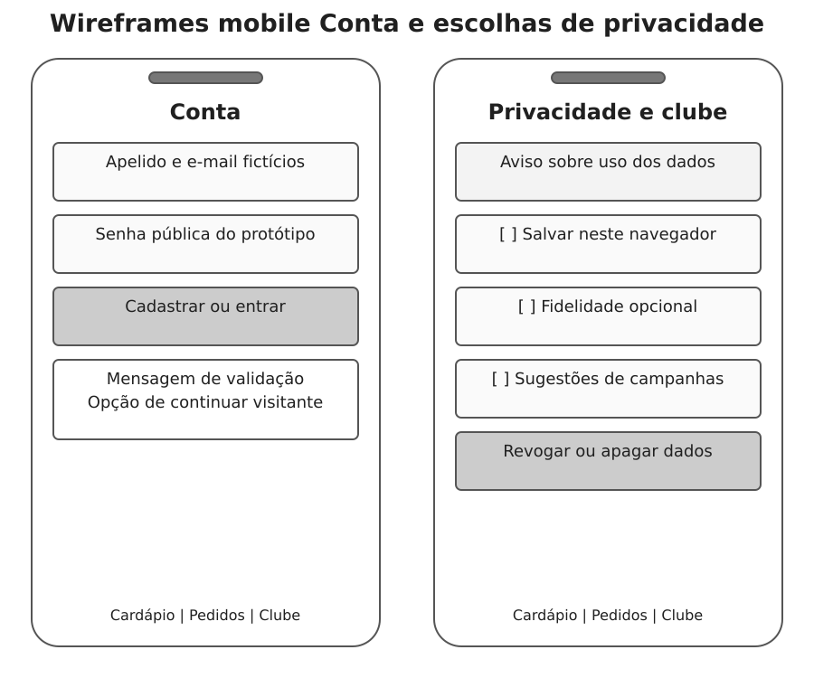
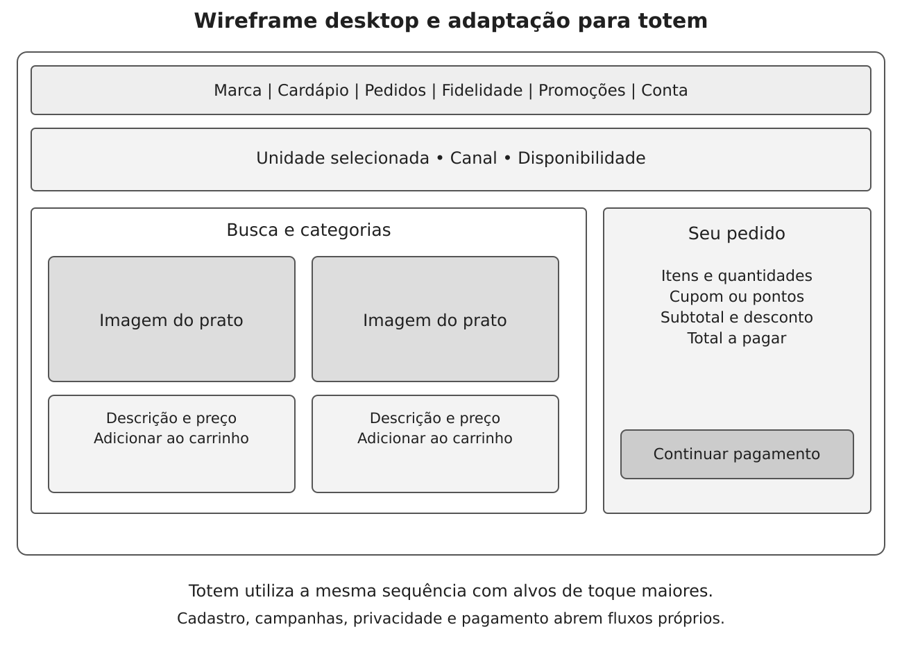

Raízes do Nordeste • revisão de 18 de outubro de 2026.
| ID | Requisito | Comportamento | Evidência | Validação |
|---|---|---|---|---|
| RF01 | Cadastro e autenticação | Criar conta fictícia, validar dados e demonstrar entrada e saída. | js/auth.js e aba Conta | CT01–CT05 |
| RF02 | Unidade e canal | Selecionar unidade e canais Web, App, Totem ou Balcão. | Cabeçalho e cardápio | CT06, CT24 |
| RF03 | Cardápio dinâmico | Respeitar unidade, estoque, cozinha reduzida e sazonalidade. | js/data.js e js/core.js | CT07–CT09 |
| RF04 | Personalização | Consultar detalhes, adicionais, alergênicos e observação. | Diálogo do produto | CT10, CT25 |
| RF05 | Carrinho e pedido | Adicionar, alterar, remover e calcular valores em centavos. | Painel Seu pedido | CT10–CT12 |
| RF06 | Pagamento externo | Simular solicitação desacoplada via Pix ou cartão. | simulatedGateway em js/app.js | CT13–CT15 |
| RF07 | Retorno do pagamento | Exibir aprovação, recusa ou falha, evitando duplicidade. | Diálogo de pagamento | CT13–CT16 |
| RF08 | Acompanhamento | Mostrar recebido, preparo, pronto e recebimento confirmado. | Aba Meus pedidos | CT17 |
| RF09 | Fidelidade | Adesão opcional, acúmulo, resgate e revogação dos pontos. | Aba Fidelidade | CT18–CT20 |
| RF10 | Promoções e campanhas | Campanha pública com cupom, mínimo, teto, validade e sugestões opcionais. | Aba Promoções e carrinho | CT21–CT23 |
| RF11 | Privacidade | Escolhas separadas de persistência, fidelidade e sugestões; exclusão. | Privacidade e respectivas abas | CT26–CT29 |
| RF12 | Multicanalidade | Manter jornada reconhecível em Web, App e Totem. | Seletor Canal e CSS | CT24, CT30 |
| RF13 | Operação integrada | Representar preparo, gestão local, indicadores e auditoria na modelagem. | Casos de uso e arquitetura conceitual | Revisão da modelagem |

Fonte: elaboração para o projeto. Arquivo SVG editável.

Fonte: elaboração para o projeto. Arquivo SVG editável.

Fonte: elaboração para o projeto. Arquivo SVG editável.

Fonte: elaboração para o projeto. Arquivo SVG editável.

Fonte: elaboração para o projeto. Arquivo SVG editável.

Fonte: elaboração para o projeto. Arquivo SVG editável.
36 testes automatizados de regras passaram. Os testes visuais e de interação em navegador permanecem pendentes. Os wireframes não devem ser apresentados como prints da aplicação executada.
Cadastro, autenticação, pagamento, estoque e auditoria são demonstrativos. Identidade segura, persistência compartilhada, webhooks e permissões de funcionários exigem back-end.
O projeto está disponível publicamente nos seguintes endereços: